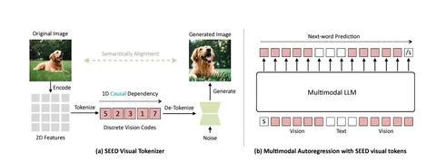
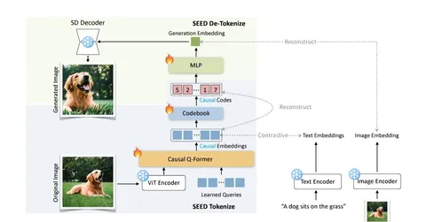

Making LLaMA SEE and Draw with SEED Tokenizer
LLaMA — семейство больших языковых моделей от Meta AI, которые до недавнего времени понимали только текстовые запросы и не умели обрабатывать изображения.
Популярный подход к тому, чтобы загрузить в такую модель картинку — закодировать изображение в вектор специальным энкодером, привести адаптером в нужную размерность и подать результат на вход нейросети так же, как и текст. А LLaMA вернёт ответ на естественном языке. Например, посчитает для вас яблоки на загруженном фото.
Так можно решить задачу распознавания, но объединить еë с чем-то другим, например, с генерацией изображений уже не получится.
Авторы сегодняшней статьи попробовали это исправить: добавить к обычной LLaMA токенайзер SEED, чтобы она могла не только распознавать, что изображено на картинке, но и генерировать что-то новое на основе входных данных.
Суть похода — на схемах. Сначала авторы в несколько стадий обучают картиночные токены на VQ-кодбуках — так токен сразу получает причинное свойство и его остаëтся только векторизировать. Интересно, что сначала обучается именно SEED tokenizer, а после того, как он будет готов, языковую VLM-модель отдельно обучают предсказывать следующие токены, в том числе новые картиночные.
А дальше детокенайз — через кодбук дискретные коды превращают обратно в вещественные вектора и подают в диффузионную нейросеть.
Комбинация LLaMA + SEED напоминает по архитектуре EMU. Но если вы внимательно прочитаете статью, о которой я рассказываю, то легко заметите отличительную особенность: множество красивых картинок с результатами, но очень плохие VLM-метрики. Мне удалось пообщаться с авторами, и они честно ответили, что сейчас метрики — не их сильная сторона. Но они продолжают улучшать токенайзер и уже подали на конференцию новую версию — SEED-X. Им удалось избавиться от кодбуков: обучают диффузионную нейросеть теперь на визуальных эмбеддингах.
Разбор подготовил❣ Андрей Чернов
CV Time
LLaMA — семейство больших языковых моделей от Meta AI, которые до недавнего времени понимали только текстовые запросы и не умели обрабатывать изображения.
Популярный подход к тому, чтобы загрузить в такую модель картинку — закодировать изображение в вектор специальным энкодером, привести адаптером в нужную размерность и подать результат на вход нейросети так же, как и текст. А LLaMA вернёт ответ на естественном языке. Например, посчитает для вас яблоки на загруженном фото.
Так можно решить задачу распознавания, но объединить еë с чем-то другим, например, с генерацией изображений уже не получится.
Авторы сегодняшней статьи попробовали это исправить: добавить к обычной LLaMA токенайзер SEED, чтобы она могла не только распознавать, что изображено на картинке, но и генерировать что-то новое на основе входных данных.
Суть похода — на схемах. Сначала авторы в несколько стадий обучают картиночные токены на VQ-кодбуках — так токен сразу получает причинное свойство и его остаëтся только векторизировать. Интересно, что сначала обучается именно SEED tokenizer, а после того, как он будет готов, языковую VLM-модель отдельно обучают предсказывать следующие токены, в том числе новые картиночные.
А дальше детокенайз — через кодбук дискретные коды превращают обратно в вещественные вектора и подают в диффузионную нейросеть.
Комбинация LLaMA + SEED напоминает по архитектуре EMU. Но если вы внимательно прочитаете статью, о которой я рассказываю, то легко заметите отличительную особенность: множество красивых картинок с результатами, но очень плохие VLM-метрики. Мне удалось пообщаться с авторами, и они честно ответили, что сейчас метрики — не их сильная сторона. Но они продолжают улучшать токенайзер и уже подали на конференцию новую версию — SEED-X. Им удалось избавиться от кодбуков: обучают диффузионную нейросеть теперь на визуальных эмбеддингах.
Разбор подготовил
CV Time

1 823 просмотров · 40 реакций
Открыть в Telegram · Открыть пост на сайте